Make Your MC-Dyno
1. Introduction
This page intent is to guide you on the creation of your first MC-Dyno project. The MC-Dyno proposed here, is the cheapest and easiest assembly that can be done to get a working MC-Dyno setup. You can use this page as a guide even if you have a different motor, a different controller board and/or different motor holders.
Tip
In some instances you will find tip blocks like these… in here you will find tips and tricks on how to improve or “hack” the MC-Dyno for your specific needs.
Warning
Warning blocks are not decoration. If you ignore them, your MC-Dyno may respond with mysterious smoke. Read carefully—future-you will thank present-you. This warning has already saved several MC-Dyno projects…
All of the files and links that are required during the built are available here. These are mainly 3D models and source code.
Once you start following the different chapters, open the corresponding files and links to have all of the required files handy.
The content might be updated over time. Legacy code will still be available in the legacy folder where the legacy files will be organized by date when they where out-commissioned.
1.1 Hardware
For a smooth MC-Dyno build…
If you want the most up-to-date hardware, that is currently used in the majority of the MC-Dyno projects is:
One MCLV-48V-300W Development Board for the Device-Under-Test side
One ACT57BLF02 Motor for the Device-Under-Test side
One MCLV-2 Development Board for the Dynamometer side
One AC300022 - 24V 3-PHASE BRUSHLESS DC MOTOR WITH ENCODER for the Dynamometer side
If you use the MCLV-2 Development Board, for communicating with the pc, reading data and controlling the dynamometer, an USB to RS232 board is suggested, this is the one used in the amjority of the MC-Dyno Projects: MCP2200 USB TO RS232 DEMO BOARD
Required hardware
Two MCLV-48V-300W Development Board if you also want to create the driver for the Device-Under-Test side (motor).
One MCLV-48V-300W Development Board if you only need the dynamometer side.
For the Dynamometer side you will need a motor with encoder. The standard one used is the: AC300022 - 24V 3-PHASE BRUSHLESS DC MOTOR WITH ENCODER.
For the Device-Under-Test (motor driver) code demonstrations, in this repository, the majority was made for the ACT57BLF02 Motor and some for the AC300022 - 24V 3-PHASE BRUSHLESS DC MOTOR WITH ENCODER.
Flexible aluminum jaw shaft coupling (if the above suggested motors are used, then 8mm bore should be selected).
Eight M4 × 10 mm hex-socket screws
3D printed brackets, which can be found in the 3Dparts folder (OpenSCAD + STL).
Wood mounting base or 4 (20×20) T-slot aluminum profiles, minimum length 500 mm
For T-slot mounting Eight M5 socket-head cap screws (M5 SHCS) - 16 mm
For T-slot mounting Eight M5 T-slot nuts
Windows PC running Windows 10.
Alternative Hardware
For High Voltage Motor Testing - Two MCHV-230V-1.5kW Development Board if you also want to create the driver for the Device-Under-Test side (motor).
For High Voltage Motor Testing - One MCHV-230V-1.5kW Development Board if you only need the dynamometer side.
MCLV-2 Development Board can be used instead of the MCLV-48V-300W for the dynamomter side, performance is very similar.
An alternative motor that can be used for the Dynamometer side is the ACT57BLF02 Motor, this motor is also the one most used for the Device-Under-Test side (motor) demonstrations.
1.2 Software needed
Scilab 6.1.1 (installation directory: https://www.scilab.org/download/previous-versions); newer versions will not work
X2C 6.4 (Installation tutorial: https://www.youtube.com/watch?v=H_EVY1D95eY)
MPLAB X IDE and MPLAB X IPE (installation: https://www.microchip.com/en-us/tools-resources/develop/mplab-x-ide)
XC-DSC 3.21, which you can install during process of installation of MPLAB X
2. Assembling the hardware
In this section the steps to build a MC-Dyno will be described. This is the easiest possible MC-Dyno you can make, but as you saw in the home page, you are free to play around and make the MC-Dyno that best suits your needs.
Before starting this guide, navigate to the file section 3Dparts and 3D print the motor mounts for the motors used. For the Device‑Under‑Test (DUT) side, use ACT57BLF_blue_wedge_V1_00.stl. For the dynamometer side, use Hurst_blue_wedge_V1_00.stl. Print one bracket per motor (one ACT for the DUT side and one Hurst for the dynamometer side). There are two bracket sizes available: small for portable demonstrators (blue wedge) and standard size (unified). Before printing, decide the motor brackets versions that matches best your setup. You can also find the openSCAD files for the brackets in there, so if you would like to modify this model to fit a different motor, you’re welcome to do so.
{kind=link}
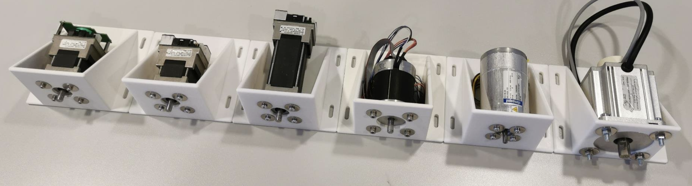
Some of the Many Unified Motor Brackets
You can print this model in PLA or PETG and make sure to set the infill to 100%. You don’t need to enable any supports.
{kind=link}
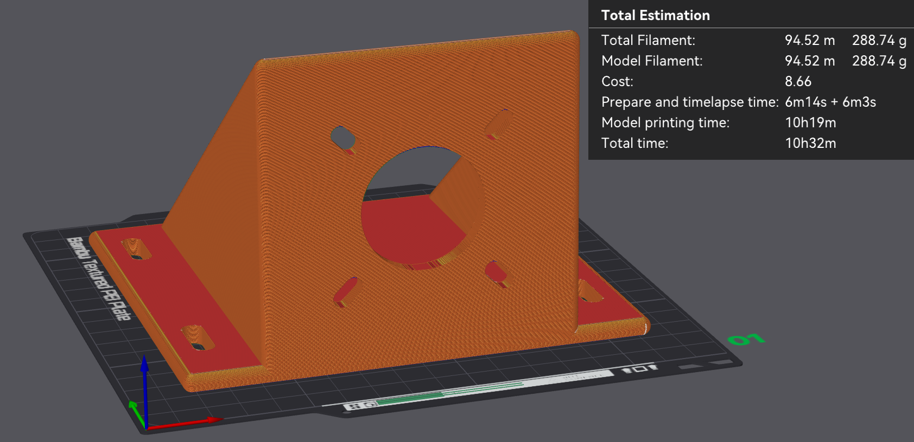
ACT57BLF02 bracket — slicing preview (PLA, 100% infill).
2.1 Step 1: Mount Motors to 3D printed braket, align and fix
As a first step, mount the motors in the mounting brackets that you have 3D printed.
After that, fix the Motor brackets to the T-Slot or your base support.
If you are using different motors be sure to make the brackets in such a way that the motor shafts are aligned. This is very important.
After placing the brackets to your base, align them and use the shaft coupler to help you align them.
Fix everything by tightening the different screws. If the shaft coupler spins freely, then the “hand alignment process” was correct, if you see wiggle or that the shaft requires different forces in different positions to rotate, that might mean that the motors shafts, aren’t completely aligned. If that happens please untighten, move the brackets as needed and tighten the screws needded to guarantee the best alignment possible.
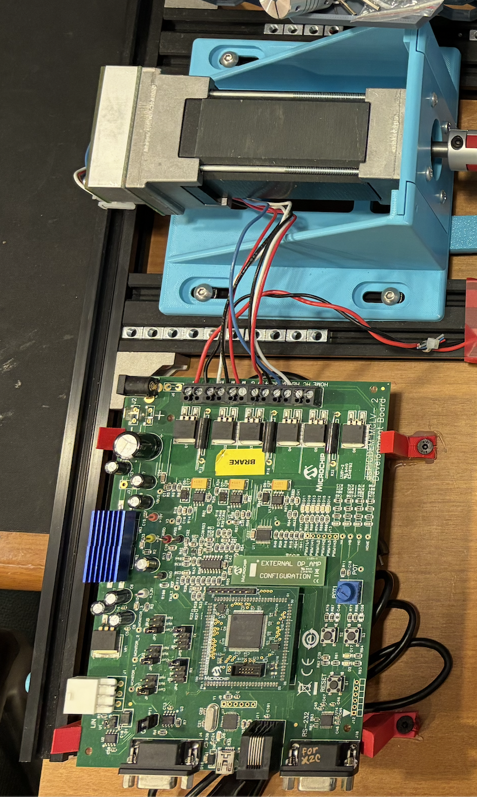 Standard Dynamometer Side |
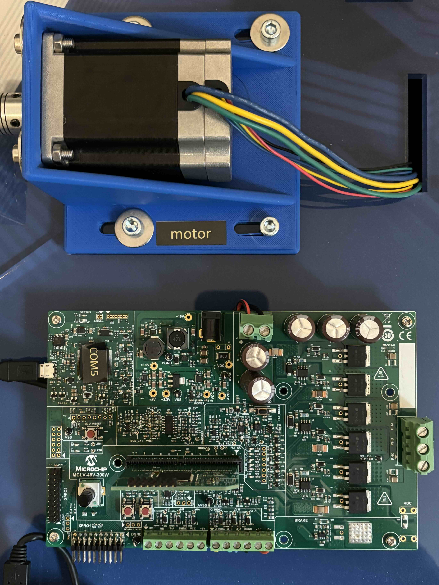 DUT Standard Configuration |
{kind=link}
{kind=link}
Tip
The shaft coupler can handle some small misalignment but will add unnecessary force to the Motor shafts, making the control not reliable, for this reason try to ensure shaft alignment between motors.
2.2 Setup Boards and wire them to the motors
Warning
To avoid the Dynamometer to destroy itself, it’s mandatory to have a power sink for the DC-link voltage. Best way is to connect both DC link boards together.
{kind=link}
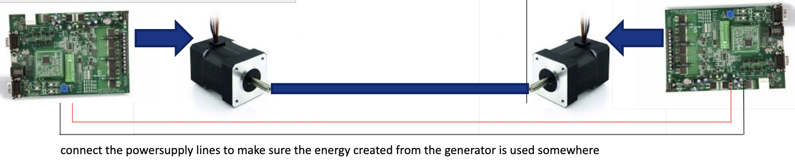
To avoid the Dynamometer to destroy itself, it’s mandatory to have a power sink for the DC-link voltage. Best way is to connect both DC link boards together.
2.2.1 Wiring the Dynamometer side
For wiring the Hurst Motor, use the standard connectors provided in the box. the cables you will want are shown in the pciture below.
Feel free to cut the not used cables like in the pciture.
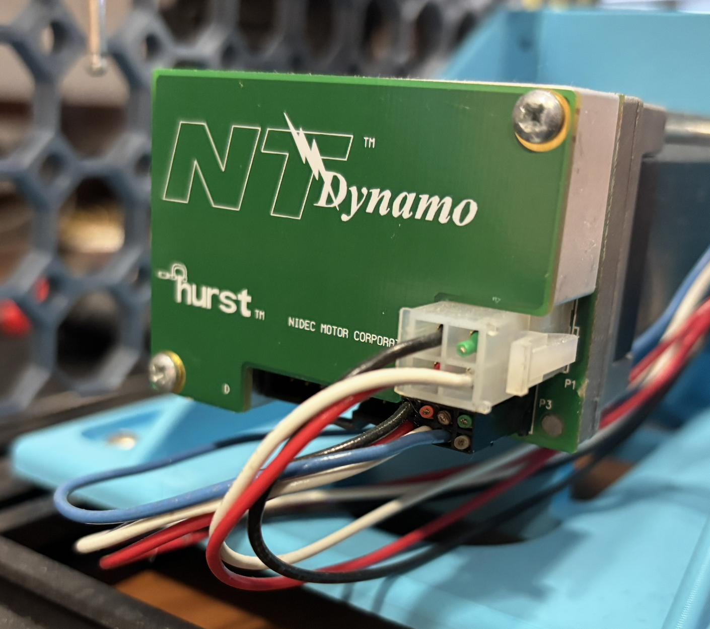 Hurst Motor Wiring |
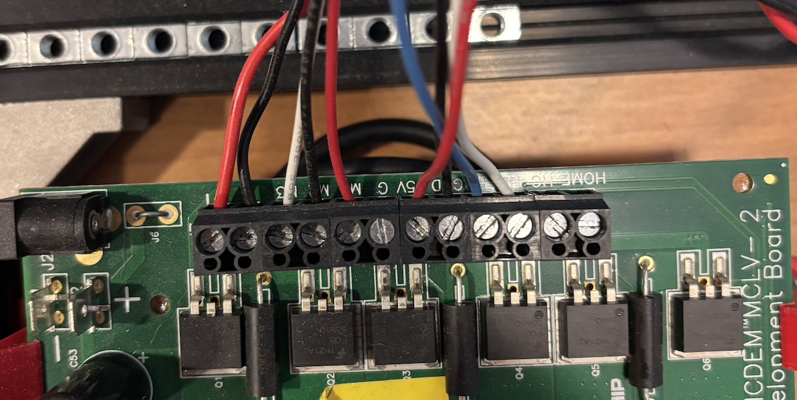 MCLV-2 wiring |
{kind=link}
{kind=link}
2.2.2 Wiring the Device-Under-Test side
For Wiring the ACT motor to the MCLV-48V-300W board follow the image below as reference.
For phase A connect the yelow wire, for phase B connect the green wire and for phase C connect the BLU wire
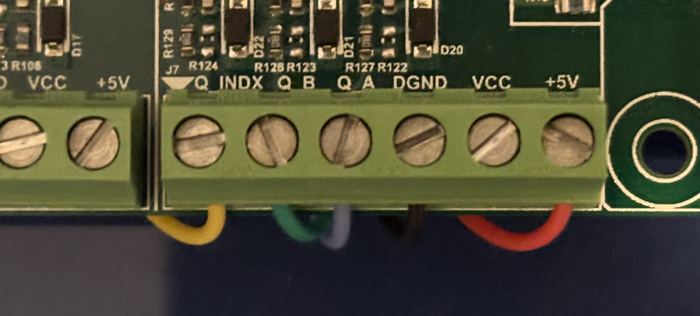 Enocder ACT Motor Wiring to MCLV-48V-300W |
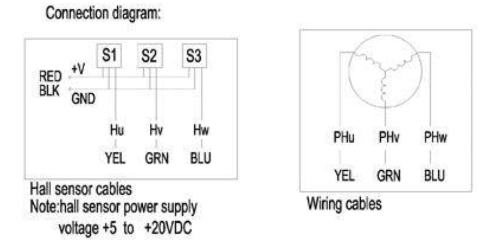 Connection Diagrams |
{kind=link}
{kind=link}
2.2.3 Configure MCLV-2
For the MCLV-2 you will need the ATSAM54P20A External OpAmp PIM board. Other than that you will need to configure the board like shown in the pciture below (make sure all jumpers in your baord are palced in teh same way as in the refrence picture):
{kind=link}
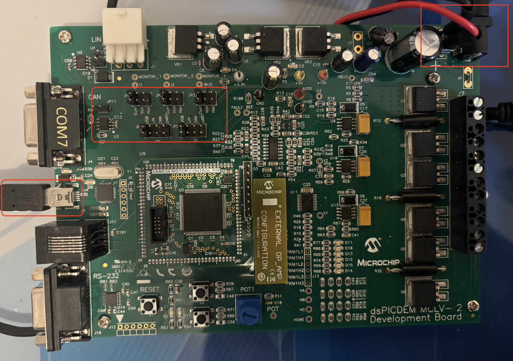
MCLV-2 board configuration
In this case, we are conncecting the 24Volt power source to this board, and then going out with two cables (positive and negative) from the MCLV-2 board to the MCLV-48V-300W to share the DC-Link and guaranteeing not being able to dissipate the energy created while braking the motor.
2.2.4 Configure MCLV-48V-300W
For the MCLV-48V-300W you should follow the conenction shown below.
Note that, since this is the Device-Under-Test side, you can choose to put different DIM boards with different software loaded to test different motor control algorithms. The motor-side HEX downloads are listed on the Motor Side (Device Under Test) page.
Tip
The MCLV48_300_DIMhold.stl is not necessary, but to guarantee better connection of the DIM boards to the MCLV-48V-300W board the suggestion is to 3D print one and use it.
{kind=link}
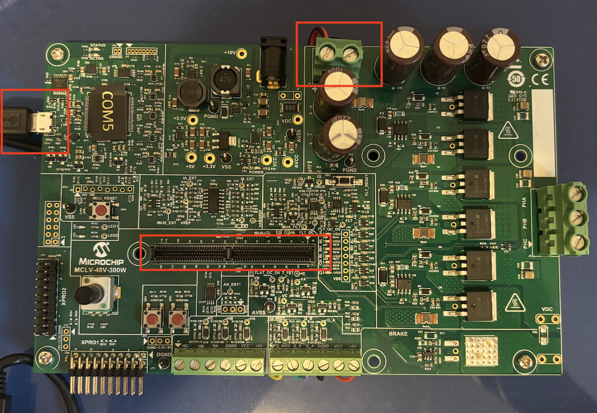
MCLV-48V-300W board configuration